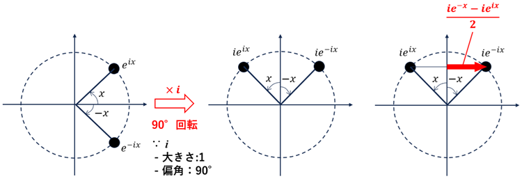

定義域, 値域を複素数に広げると、\(|\sin|\leq 1,|\cos|\leq 1\) は成り立たない。
\[
\cos y = \frac{e^{iy}+e^{-iy}}{2},
\sin y = \frac{e^{iy}-e^{-iy}}{2i}
\]
の \(y\) に \(x+iz\) を代入して 大きさを求めると下図のようになる(たぶん)。
\(x\) 軸上(\(z=0\)) では \(\leq 1\) となっている。
計算してみるか･･･
\[
\begin{align}
\sin(x+iz) &= \frac{e^{i(x+iz)}-e^{-i(x+iz)}}{2i} (定義式に x+iz を代入)\\
\\
&= \frac{e^{ix}e^{-z}-e^{-ix}e^{z}}{2i} \left(\leftarrow \frac{i}{i}を掛ける\right) \\
\\
&= \frac{ie^{ix}e^{-z}-ie^{-ix}e^{z}}{-2} \\
\\
&=\frac{ie^{-ix}e^z - ie^{ix}e^{-z}}{2}
\end{align}
\]
●実数の場合, \(z=0 \Rightarrow e^{-z}=1, e^z=1\)

\(x\) が変化しても赤矢印は -1 ～ +1 の範囲でしか変化しない。